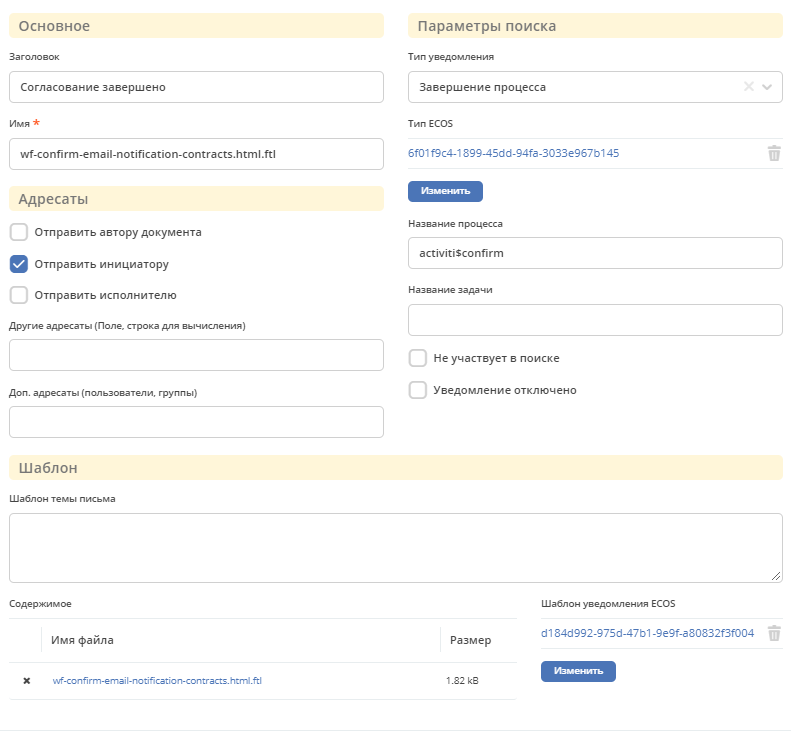
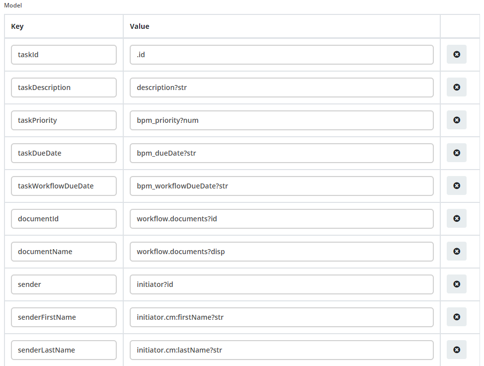

Уведомления о событиях alfresco
Содержание
Для настройки уведомлений на определённые события добавлен системный журнал “Уведомления о событиях”.
Предупреждение
Данный журнал является временным решением перехода старой отправки уведомлений через новый микросервис.
Примечание
При создании уведомления через журнал, уведомление складывается по пути: /app:company_home/app:dictionary/app:email_templates/cm:workflownotification
1. Форма уведомления
{kind=link}
Примечание
Имя должно быть уникальным
2. Тип уведомления
При каком либо событии, например переназначении задачи, ищется шаблон в журнале с фильтром по полю “Тип уведомления”. Если установлена галочка “Не участвует в поиске”, шаблон игнорируется.
3. Логика поиска шаблона
Шаблон можно привязывать к типу кейса, процессу Activity/Flowable и задаче, для этого используются следующие поля соответственно “Тип ECOS”, “Название процесса”, “Название задачи”.
Приоритет выбора шаблона следующий: “Название задачи” > “Название процесса” > “Тип ECOS”.
Пример: мы можем задать для определенной задачи шаблон, он будет применён для всех типов кейсов и для всех процессов. Но если создадим шаблон для такой же задачи, но укажем тип кейса, то для указанного типа кейса и задачи будет выбран этот шаблон.
4. Отключение/Включении уведомлений
Для отключение уведомления по фильтру необходимо установить галочку Уведомление отключено
Если по умолчанию необходимо отключить отправку уведомлений, создаём запасись с пустыми полями типа ecos, процесса и задачи. Тогда отправка по умолчанию будет отключена.
Для полного отключения уведомлений необходимого добавить properites со значением false:
notification.cancel.workflow.enabled=true
notification.complete.task.enabled=true
notification.complete.workflow.enabled=true
notification.document.change.enabled=true
notification.for.log.item.enabled=true
notification.pool.task.enabled=true
notification.reassing.task.enabled=true
notification.start.task.enabled=true
notification.start.workflow.enabled=true
workflow.notification.overdue.enabled=true
workflow.notification.workflow.overdue.enabled=true
5. Адресаты
Поля Отправить автору документа, Отправить инициатору, Отправить исполнителю, Другие адресаты (Поле, строка для вычисления), Доп. адресаты (пользователи, группы) позволяют регулировать кому будет отправлено уведомление.
Предупреждение
Для некоторых уведомлений выбор адресата может не работать. Проверить кому отправляется можно в классах нотификатора com-core ru.citeck.ecos.notification.*
Например, для DocumentNotificationSender не реализованы функции получения для отправки инициатору и исполнителю.
6. Шаблон
В поле Содержимое находиться шаблон который отправляется на стороне Alfresco.
Для отправки уведомления через микросервис ecos-notification в поле Шаблон уведомления ECOS нужно выбрать уже созданный шаблон из журнала Шаблоны уведомлений. Поле содержимое можно оставить пустым.
7. Данные для шаблонов ECOS
В данных уведомлений в качестве основной записи уведомления используется ru.citeck.ecos.notification.task.record.TaskExecutionRecord с следующими полями:
name, title, description, .id
Map<String, Object> workflow - Свойства задачи процесса, обычно содержит id и документы (documents)
Map<String, Object>properties - Свойства полученные из таски. Для получение свойства опускается префикс
properties. (например просто bpm_priority)
В переменную $subject устанавливается тема которая вычисляется в нотификаторе.
Пример модели данных:
{kind=link}